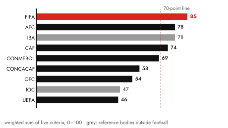
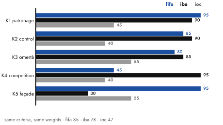
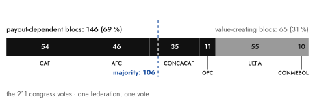
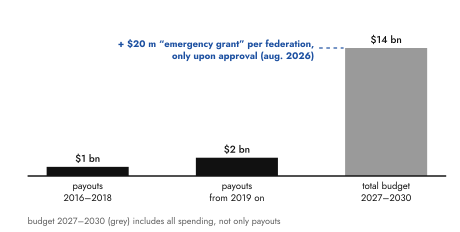
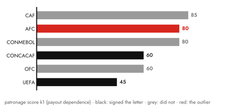
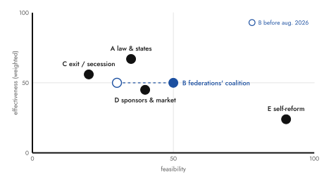

Why the most powerful man in world football does not fall: FIFA under Infantino is not the most criminal body in world sport – but the most "cleanly" mafia-organised one. Maximum rule, minimum attack surface.
No court has ever convicted Gianni Infantino, and in all likelihood none ever will. Anyone who wants to understand the president of world football's governing body is therefore better off not looking for crimes in the first place. Crimes? It might not even be fair to FIFA to speak of criminal conduct. Let us try something more analytical instead, and examine a specific technique of rule. Conveniently, sociology offers a ready-made toolkit for exactly this, one that has been sharpened for decades on a single object of study: the mafia.
1one call is enough?
July 2026, the World Cup in the United States. The American striker Folarin Balogun is shown a red card. A ban is a ban, no appeal possible, that is how unambiguous the rules are – the federation itself confirms as much. Four days later, just in time for the host nation's round of sixteen, the ban is suspended. In between lie, according to the magazine Politico, several phone calls from the American president to the president of FIFA. Donald Trump publicly celebrated the decision as the correction of a great injustice and thanked the world governing body, as if signing off on services rendered. There is no evidence of direct intervention by the White House with the disciplinary committee. The committee suspended the ban on probation under Art. 27 of its code.
Anyone who caught the reversal in the stadium or on television probably did no more than raise an eyebrow. I myself have long since stopped doing anything but shrugging at news out of Zurich; my interest in the global tournaments has been shrinking for years. Outrage presupposes the expectation that things could have gone differently. Since they no longer do, the public outcry is all the shorter. A system in which the lifting of a sporting sanction by telephone call from the White House counts as plausible has crossed a threshold that the vocabulary of sports journalism can no longer describe. So let us try a methodical classification instead.
2the grid: what "mafia-like" rationally means
"Mafia-like" is a strong word. Which is precisely why it should be used with precision; otherwise it is merely an insult. This text asserts nothing in criminal law; it sorts. Sociology – from Diego Gambetta's study of the Sicilian mafia to Letizia Paoli's work on the Calabrian brotherhoods – describes mafia rule through a bundle of five structural features.1
First, patronage instead of rules. Gambetta calls this the protection that generates its own demand. Loyalty is bought through the distribution of resources; whoever depends on the patron supports the patron, not the institution.
Second, the capture of the oversight bodies. Nobody abolishes courts, supervisory boards and ethics committees – that would be visible. One simply neutralises them and keeps them running as scenery. The committees convene, the reports appear; only the cases that would matter no longer reach them.
Third, omertà – or, in its modern variant, better: informality. Decisions are taken internally, undocumented, in a small circle; towards the outside, collective silence or, more elegantly still, collective memory loss. Paoli describes the code of silence as a status contract. Whoever belongs does not need to be forced into silence; it comes with membership, like the clammy handshake.
Fourth, the elimination of competitors. Rivals do not lose elections; they fail beforehand – at eligibility checks, at ethics bans, at discreditation. The competition takes place, just without competitors.
Fifth – and this is the essential criterion distinguishing it from ordinary crime: the legal façade. The organisation operates formally within the law; every single act withstands legal scrutiny. The exercise of power itself takes place in grey zones that criminal law, by construction, cannot reach; for institutions of this design, it was simply never written.
Contrary to popular belief, violence is not a necessary part of it. What counts is the replacement of formal governance by personal networks of power, piece by piece. Against this grid, and only against this grid, I measure the Infantino era. What comes out is precisely not a case for investigators.
3the founding act and the disempowerment of oversight
On 26 February 2016, an extraordinary congress in Zurich elected the general secretary of UEFA president of FIFA. The organisation lay in ruins. Raids, arrests, the toppled patriarch Blatter banned after 17 years. Infantino ran as a stand-in for Michel Platini, who had been taken out of the race by an ethics ban; had Platini been admitted, Infantino would have stood down. His campaign already contained the entire later programme, compressed into one sentence to the delegates: "FIFA's money is your money." It was, word for word, the formula of his toppled predecessor: give me your vote, I give you money. The reform congress elected the restoration – to the applause of those celebrating themselves as reformers.
A decade later, this founding act has acquired a judicial echo: in June 2026, Platini filed a criminal complaint in France against FIFA and Infantino. An orchestrated campaign, the allegation runs, prevented his candidacy. Here I want to stay clean: the allegations are untested in court, FIFA denies them, the presumption of innocence applies. But the complaint marks the reach of the open question. It aims at the legitimacy of the entire term of office.
What happened immediately after the election, by contrast, can be documented without gaps. As early as May 2016, at the congress in Mexico City, Infantino had it resolved that the FIFA Council could itself appoint and dismiss the members of all oversight bodies. The overseer thereby became an employee of the overseen. Domenico Scala, chairman of the audit and compliance committee, resigned the very same day; a central pillar of good governance was being undermined, he declared. A year later, in Manama, the two heads of the ethics committee, Cornel Borbély and Hans-Joachim Eckert, were not renominated, without explanation. Borbély, who according to later reports had also examined complaints concerning Infantino himself, called his removal "exclusively politically motivated". The architecture of the office, too, was dismantled: the reform statutes of 2016 had provided for a representative president and an executive general secretariat. Today, the president decides. Mark Pieth, who once chaired the reform commission, needed just two words for the result: a "modern autocrat".
And then there is the complex that reads like a laboratory study of criteria two and three: between 2016 and 2017, Infantino met repeatedly with Michael Lauber, Switzerland's attorney general, whose office was at that very time running some two dozen proceedings in the FIFA cosmos. The meetings were not minuted; one of them, none of the participants could later remember at all. A collective amnesia that forms a class of its own even in the federation's absurdity-rich history. In 2020, the Swiss judiciary opened criminal proceedings against Infantino over this, among other things for incitement to abuse of office. The special prosecutors appointed to the case attested that the meetings had a "clandestine and conspiratorial character". They nevertheless dismissed the proceedings in 2023; the evidentiary basis sufficient for an indictment was simply lacking. Read those two sentences twice, one after the other: the investigators describe conspiracy and deny criminal liability. A more precise definition of the legal façade will not be found.
The third meeting, incidentally, took place at the Hotel Schweizerhof in Berne, a house owned by Qatar's sovereign wealth fund, a few steps from the Qatari embassy. According to reporting by the Swiss weekly NZZ am Sonntag, the meeting room had been bugged on Qatar's behalf; the emirate feared for its World Cup and was gathering material.2 Switzerland's top prosecutor and the president of the accused federation, united off the record in the hotel of an interested state, eavesdropped on by its agents. Reality had long since overtaken the metaphor. Lauber – whom a court later found to have told his supervisory authority an untruth – resigned. He, after all, had a supervisory authority capable of making that finding. In Infantino's case there was no one who would have had to find anything.
4patron on the inside, client on the outside
While Infantino buys loyalty inside the federation, outside it he sells the one thing FIFA possesses and states cannot print: legitimacy. In 2018, after the World Cup in Russia, he accepted the Order of Friendship from the hands of Vladimir Putin. In 2021 he rented a house in Doha, and the following year defended the Qatari tournament against all criticism – including that speech in which the president of the world governing body felt, in turn, Qatari, Arab, African, gay, disabled and a migrant worker, without ever having been anything other than the employee of his hosts.
The best-documented case of active steering is Saudi Arabia. The award of the 2034 World Cup was a construction whose statics can be traced: the merging of three continents for 2030, so that for 2034 only Asia and Oceania remained; bidding windows of a few weeks; at the end, a video conference without a vote. There was applause instead of an election. A single federation president, Norway's Lise Klaveness, had her objection entered into the record. In parallel, the Saudi state corporation Aramco became FIFA's main sponsor; over a hundred national-team players protested, in vain. Blatter bought the federations with FIFA's money. Today, states buy the president along with it.
At the American stage of escalation, not even the façade is maintained any more. The US office in Trump Tower, the accompaniment of state visits to Riyadh and Doha, the seat on Trump's "peace council", the specially invented FIFA Peace Prize after Oslo had declined to oblige. For three years the president gave no open press conferences; communication ran through statements and his own Instagram channel. That, too, is a kind of omertà – just with better picture selection. When the Balogun ban fell in July 2026, the circle was closed. External dependence intervened, visibly and for the first time, in the sporting integrity of a running tournament. Which opens up wonderful opportunities to pocket a little side income on Polymarket, provided one sits in the orbit of those intervening.
The final then supplied the closing image no cartoonist would have dared to draw. 19 July, East Rutherford, Spain beat Argentina. Trump hands over the trophy, then remains standing on the stage, in the middle of the Spanish team's victory photo, whistles coming down from the stands. Anyone who had watched the 2025 Club World Cup knew the choreography; back then Trump stood among the bemused players of Chelsea FC, and Infantino presented him with a medal actually reserved for the winners. So one cannot say there had been no dress rehearsal. Infantino hurries across the stage to get the president out of the picture. In vain. The moment that by every convention of sport belongs to the players alone belonged to the protector – and the federation president no longer had any power of disposal over it. The day before, Infantino had declared the tournament the greatest sporting, social and cultural event of humankind; one would have to, he said, "invent new words". For once he is right. Just not in the way he means.
5the survey: 85 out of 100
When the American justice system moved against the functionaries of world football in 2015, it reached for the RICO Act – the law written to break up the Cosa Nostra. The question of how mafia-like organised football is thus has an official precedent. Applying the grid systematically – each body receives, per criterion, a score from 0 (feature not discernible) to 100 (fully developed), weighted by its load-bearing role for the system of rule: patronage 30 %, control 25 %, façade 20 %, omertà 15 %, elimination of competitors 10 % – the survey of the FIFA system, together with two reference bodies from outside football, yields the following tableau:3

The gradient follows three zones. Above the 70-point line lie the closed systems: FIFA (85) and the two confederations whose voting blocs carry it. The AFC (78) is de facto coordinated from the Gulf region; the 54 federations of the CAF (74) form the bloc that decides elections; just below the line follows CONMEBOL (69) – three of its presidents in a row were indicted or convicted after 2015, which paradoxically lowers its score, more on that in a moment. The CAF deserves a second look: 29 years of Issa Hayatou, then a successor banned by FIFA's own ethics committee, then a Zurich general secretary installed as "general delegate for Africa" – control was not restored, it was simply relocated to Zurich, and the election-deciding bloc has hung from the drip twice over ever since. In the middle field, the partly reformed: CONCACAF (58), whose Warner system – the Caribbean as a voting bloc in exchange for favours – was once the archetype of football patronage, until US prosecutors caught three presidents in a row; since then, real compliance, but the same incentive structure. And the OFC (54), too small for grand corruption, too dependent for independence; its score is, I admit, the thinnest plank in this calculation. The only body below 50: UEFA (46) – which says less about European morals than about the fact that it is the only body where documented dissent has ever had an effect. A system in which resignation in protest is possible and has consequences (Boban, Gill, Klaveness) is not a closed one. Granted, Nyon copied the term-limit manoeuvre too; in 2024, Čeferin had his first term defined away, exactly after the Zurich template. Only, afterwards, he did not stand again. The difference sounds small and is categorical.
The strangest line is the first. FIFA tops the tableau although it is the only organisation in the upper field to manage without a single criminal conviction. Or more precisely: because. That is the criminality paradox of this scale, and one has to sit with it. CONMEBOL stands below FIFA despite three judicially dispatched presidents, because there the façade collapsed and the criminal courts subsequently imposed functioning oversight. The grid, in a sense, rewards getting caught. To anyone who finds that cynical: the scale measures the structural closure of a system of rule, not wrongs committed. Whoever wants to measure wrongs committed needs a different scale. It would be called the criminal record – and on it, FIFA would stand at zero.
The profile of the centre shows how it is done:

K1 patronage (95): 211 federations with one vote each, the smallest of them existentially dependent on payouts that rise before every election. One billion in the first cycle, fourteen billion in the budget of the next. When I ran the first version of this text, the score stood at 90, incidentally; Zurich then supplied the price tag itself, in August – more on that in the next chapter. K2 control (85): internally captured in full; externally, the Lauber complex remained without consequences. K3 omertà (80): unminuted meetings with collective amnesia, awards by acclamation, three years without an open press conference. K4 competitors (45): since 2016 there has been effectively no competition for the office, two re-elections by acclamation without opposing candidates. The term limit – three times four years, a core reform of 2016 – was not abolished, that would have been crude; in 2022 the Council simply determined that the first term had been "incomplete" and did not count. The rule remains in force; only its object disappears. The score nonetheless stays deliberately below fifty, because the gravest allegation in this category, the Platini complex, is untested. K5 façade (95): the top score of the entire tableau. No conviction, no indictment, all proceedings dismissed or pending.
FIFA is thus not the most criminal body in the tableau – but it is the one operating and organised in the most "cleanly" mafia-like way. Where others crossed the threshold of criminal liability and paid for it, the centre refined the procedure: maximum rule at minimum attack surface. And the 85 points do not stand alone. They structurally presuppose the AFC's 78 and the CAF's 74, because the system is built on reciprocity. Without the dependent blocs, the centre has no majority; without its payouts, the blocs would stand there without money. How brutal the arithmetic behind this is, the congress votes show:

Calibration against the reference cases yields the most precise single finding. The IBA – the world boxing federation expelled by the IOC in 2023 – maxes out the scale on four of five criteria: Gazprom as, at times, its sole financier; an in-house "integrity unit" that declared five opposing candidates ineligible one day before the presidential election; and a congress that, after the Court of Arbitration for Sport overturned that exclusion, simply resolved not to repeat the election at all. What pushes the IBA below FIFA is solely the collapse of its legal shell. FIFA is, technically speaking, an IBA with its façade intact. The IOC, in turn, proves not innocence but a possibility: a world governing body with a monopoly and the same temptations introduced rules after its 1999 scandal that, twenty years later, actually forced the most powerful man in world sport to step down. In 2025, Bach expressly submitted to the very term limit that Infantino and Čeferin defined away. The IOC thereby turns the FIFA narrative from a story of inevitability into a story of choices. It could have gone differently. They chose otherwise. The scale stretches from the reformed pole (47) to the fallen one (78); FIFA, at 85, sits above both. That, I confess, is not how I would have called it before running the numbers.
The objection I got stuck on longest while writing: the established governance indices certify the opposite of this text. In the 2026 ASOIF review, FIFA tops the table with the best grade, A1, for the fourth time running, and the Sports Governance Observer named it best in class in 2018. The contradiction dissolves as soon as one reads what is being measured. These indices test formal compliance by yes/no indicator, partly on the basis of the audited party's self-disclosure. They survey what this grid lists as criterion five: the façade. In this difference – having an ethics committee, having a gutted ethics committee, the same indicator point – sits the pattern of rule. The grid remains falsifiable all the same, otherwise it would not be one: it would be refuted if oversight bodies were independently appointed, elections had opposing candidates, decisions were minuted and payouts were decoupled. I'm waiting.
6the patron sells the house
Up to this point, this text was a description of a state of affairs. Then came August, and reality decided to subject the theses to a field test. In late July, eleven days after the final, FIFA announced the founding of "Forward Enterprise": a subsidiary in which the world governing body's commercial rights were to be bundled. Broadcasting rights, sponsorship, tickets, licences, an initial valuation of twenty billion dollars, up to twenty per cent for private investors, proceeds of up to 4.2 billion. The member federations were to approve it by 19 September. And the letter from Zurich contained one sentence that sums up this entire essay in a single line: an emergency grant of twenty million dollars was held out exclusively to those federations that approved. On first reading the news, I actually checked the date. Then I remembered: this was not even the first attempt. Back in 2018, Infantino had put before the Council a 25-billion offer from an unnamed consortium with ties to Saudi Arabia, for a bloated Club World Cup and a global Nations League – negotiated in the back room, without disclosure of the investors; back then the German FA and UEFA dug in against it, and it was Blatter, of all people, who called it a sell-out of football. When Blatter marks the limit of commercialisation, you know where you are. The plan vanished – and came back eight years later, bigger, more formalised, and with a price tag attached to approval. The purchase mechanics, for ten years the unspoken business basis of the system, stood there in writing for the first time, with price tag and deadline. That, and only that, is why K1 stands at 95 in this text.

What happened next, the system itself did not know. UEFA convened an emergency session and threatened to boycott all FIFA tournaments; "none of us owns football," it declared, and it was not for the world governing body to sell it. CONCACAF rejected the plan unanimously, the AFC joined in. Within days, Infantino performed the U-turn; the plan is buried. The coalition nevertheless did not dissolve: in an open letter, UEFA, the AFC and CONCACAF accused the FIFA leadership of deception and demanded a fresh start at the top; Denmark's federation withdrew its confidence in Infantino. And the protecting power reported for duty promptly. Trump warned the world governing body on Truth Social that removing Infantino would be a grave mistake; the man was fantastic. Never before has an American president publicly pronounced on whether a FIFA president should stay. The New York Post even claimed Trump was considering floating Infantino as UN secretary-general; that is unconfirmed, and FIFA dismissed reports of supportive calls placed in the White House as pure invention. Imagine having to deny that in the first place.
The anatomy of this revolt confirms the grid and tests it at the same time. The patron did not fail at the hands of an institution; there still is none. He failed at the one mistake a clientelist system does not forgive: the attempt to sell off the source of the patronage itself. The collective-action problem of the 211 federations, which blocked every reform for a decade, Infantino solved single-handedly by touching everyone's asset base at once. The coalition against him is his own work. Instructive, too, who did not sign:

That it was the AFC, of all bodies, that signed confirms an older diagnosis of this survey: its loyalty was never to the man in Zurich but to the interests of its principals in the Gulf. When the investor plan crossed their commercial interests, the bloc fell away. Bought loyalty is transactional; it quits without notice.
At the same time, the system's cover changed material before everyone's eyes. For ten years it was legal: nothing justiciable, hence nothing to be had. Now it is geopolitical. Whoever has the president of the host country as a public advocate no longer needs lawyers; he has a protecting power. The calendar of the decision is set: candidacy deadline 18 November, election at the 77th congress in March 2027 in Rabat; it would be Infantino's final term, until 2031. For the first time in ten years, the outcome is not a formality.
7what could be done
Which leaves the question of whether, and to what extent, the system is reformable at all. History does have one piece of good news. Systems like this have been dislodged before. The IOC reformed for real in 1999 after Salt Lake City – but only after prosecutors and sponsors had built up pressure simultaneously. CONCACAF and CONMEBOL were taken apart by the US justice system in 2015; nothing came from within. Boxing found a third way in 2023: when the IBA proved unreformable, the dissidents founded a rival federation, and the IOC gave the challenger its recognition. The pattern is identical in every case. No system of this design has ever reformed of its own free will. It always took an external shock, usually coupled with an existential economic threat, and an internal wing that used the window – and, afterwards, permanently externalised oversight to prevent relapse.
Testing the conceivable levers against the grid produces a sobering and, at the same time, clarifying picture:

The self-reform paradox leaps out: of all options, the most feasible one – self-reform, possible at any time – is the least effective; the grid makes visible why the official narrative is a narrative of reassurance. The sponsor lever, the most effective one in 2015, when four main sponsors publicly demanded Blatter's resignation, was deliberately neutralised through the substitution of Western corporations with state capital. Aramco demands no compliance; Aramco is the consideration. From its single near-defeat, the system has learned.
And the federations' coalition? It passed its baptism of fire in August, which is why it now stands twice as feasible in the grid as before. Only, one should not make the victory bigger than it is. The boycott threat is nothing other than the exit threat – B and C worked in combination, and they prevented. No more than that. The day after the U-turn saw the same statutes, the same oversight, the same payout mechanics and a president standing for re-election. Preventing is not reforming. A coalition that topples a project has not yet changed a statute, externalised any oversight or decoupled a single payout.
The realistic reform is therefore a sequence. A pincer movement, if you will. At its start stands the only lever that can be turned from outside without the congress having to approve: lowering the justiciable threshold. That is exactly what the European Court of Justice did in December 2023 when it found that FIFA and UEFA had abused their dominant market position, and for the first time bound their administration of the monopoly to justiciable criteria: transparency, objectivity, non-discrimination, proportionality.4 The ruling makes conduct attackable that previously sat below every threshold. An opposing candidacy, a lawsuit against opaque awards, a reform motion only become risk-free once a court stands behind them. Berne has held a second, half-forgotten tool ready since 2015: the Swiss "Lex FIFA" made private bribery a public-prosecution offence and classified sports officials as politically exposed persons – defused, however, by an exemption for "minor cases" never defined in the statute, which could be sharpened if anyone wanted to. The price of the legal lever is well known: the threat of relocating the seat is real, and it explains why this option sits in the grid at modest feasibility despite the highest effectiveness. On this builds the externalisation of oversight after the model of the Athletics Integrity Unit (appointment, budget and reporting line outside Council and congress), because the reform of 2016 is the proof that internally anchored rules vanish again at the next congress. And only at the end comes the deepest screw. The payouts must be decoupled from the person – formula-bound, fixed over several years, independently audited. Starting with the money fails on the bought majority. Transparency first produces statutes that nobody enforces – that, too, has been tried. Which leaves the threshold. And for that, nobody in Zurich needs to be asked for permission.
The next measuring point has a date: 18 November. Whether the coalition that could topple a project can also field a candidate will decide whether August was an episode or a beginning.
8above fifa, there is no one
Which allows the double meaning of the title to be resolved. The case of Infantino is fully documented: in dismissal orders, minutes, resignation statements, statute amendments. A mountain of files such as no convicted man has ever left behind. The fall of Infantino, by contrast, failed to happen for a decade – and for a structural reason. A fall presupposes an instance capable of felling. The ethics committee is appointed by the Council. The Council is provided for by the president; the federations are provided for by FIFA. And the states that would qualify as external correctives have long since become business partners. The classical mafia had to infiltrate the state laboriously. FIFA has rationalised the procedure. It lets itself be rented, sponsored and decorated. The IBA had an instance above it: the IOC. FIFA has none.
Since August, this shell has its first crack – and note its direction. It does not come from above, where there is still no one, but from the side: from clients who gave notice when the patron tried to sell the house. Whether that becomes a fall or merely a change of patron will be decided between November and Rabat. The instance above FIFA does not exist, but it can be built. Nobody will found a world court of sport; a web of jurisdictions that grip the monopoly where it does business exists, in outline, already. Luxembourg laid the foundation stone in 2023, Berne has held the tool since 2015, Washington proved in the same year how fast it can go. The reform of FIFA does not begin in Zurich. It begins everywhere else. That sounds like little – but it is, after everything this survey has produced, the only realistic thing. Until then, the finding stands that is more unsettling than any verdict: All legal? Of course it is!
methodology and sources
The five criteria follow the sociological literature on the mafia (Diego Gambetta, The Sicilian Mafia, 1993; Letizia Paoli, Mafia Brotherhoods, 2003). All point values are reasoned analytical judgements by the author on the basis of publicly documented events – not measurements; untested allegations and dismissed proceedings enter with reduced weight, facts established in criminal law in full. What is measured is the structural closure of a pattern of rule, not wrongs committed. Zones and ranking are robust, the individual scores are not (uncertainty ±10 points); the counter-test with equal weighting of all criteria confirms the ranking with shrinking gaps (FIFA 80, AFC 77).5 The weights are derived from the findings and to that extent not independent; that the same grid locates the reformed IOC (47) and the expelled IBA (78) where independent instances have de facto placed them suggests it measures more than its own origin. Key sources: the Swiss special federal prosecutors' dismissal order (2023); NZZ am Sonntag on the bugging operation at the Hotel Schweizerhof (12 March 2023); Sportschau/ARD on the award of the 2034 World Cup (11 December 2024); ECJ, Case C-333/21 (European Superleague, 21 December 2023); Politico and Tagesspiegel on the Balogun case (July 2026); Sportschau, Berliner Zeitung and Tagesspiegel on the "Forward Enterprise" investor plan and its failure (July/August 2026); dpa on Trump's statement and the open letter by UEFA, AFC and CONCACAF (August 2026); the McLaren report and CAS documentation on the IBA; dpa and Sportschau on the IOC transition of 2025. Status of proceedings as of 28 August 2026; the presumption of innocence applies to all parties.